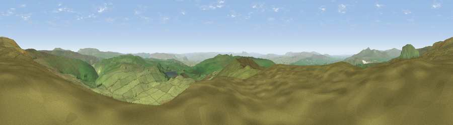

Viewpoint near Stainforth
#3421 in England · top 3% of its area beats it · near Stainforth · open accessWhere it is
The exact computed spot (SD 86825 69262). Click the marker for map links.
Public access: this spot lies on mapped open-access land (CRoW Act 2000) — you may roam here on foot. Computed from Natural England's CRoW access layer and OpenStreetMap rights of way — not the legal definitive map. Always verify locally.
The view, rendered

A 360° render of this exact spot computed from the terrain model, tree cover and land cover — summer colours, afternoon light, calibrated against photographs of famous viewpoints. Real trees, hedges and buildings will differ in detail.
The panorama
Grey silhouette: terrain skyline in each direction (720 bearings, Earth curvature and refraction included). Dashed green: skyline with trees (+15 m) and buildings (+8 m) as obstacles. Blue strip: how far the ground is visible on each bearing.
Where the view opens
Wedge length = distance to the farthest visible ground on that bearing (vegetation-aware). Rings at 10, 25 and 50 km.
What fills the view
98% grassland · 1% woodland ·
Angular shares of the visible panorama (visual magnitude), not map area. Landscape diversity 0.05 (0–1 Shannon).
Key numbers
More beautiful places nearby
The staircase of upgrades: each row has a higher view potential than everything closer. Driving times are estimates from straight-line distance, calibrated against real road routing — check an actual route before setting out.
| Place | Direction | Drive | Score |
|---|---|---|---|
| Viewpoint near Stainforth | S · 1 km | ~2 min | 73.9 |
| Viewpoint near Horton in Ribblesdale | NNW · 3 km | ~6 min | 74.6 |
| Pen-y-ghent | NW · 5 km | ~11 min | 75.8 |
| Little Ingleborough | WNW · 13 km | ~24 min | 78.8 |
| Viewpoint near Ingleton | WNW · 14 km | ~25 min | 79.5 |
| Whernside | NW · 18 km | ~31 min | 79.9 |
| Warton Crag | W · 38 km | ~57 min | 83.2 |
| Viewpoint near Grange-over-Sands | W · 48 km | ~69 min | 83.4 |
54.11906, -2.20306 · source: screening · position refined by local search. Computed location — check access rights before visiting.